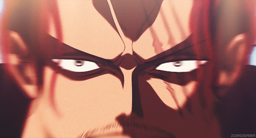
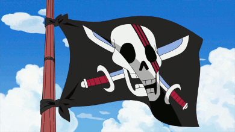

About Shanks
Red Hair Shanks, is one of the four Yonkos (Emperors) of the sea. Argubly, the strongest charcter in the one piece world. Once part of the pirate kings crew, Shanks, like every other pirate, is on a mission to discover the One piece, the greatest treasure to ever exit. Though his journey to capture the one piece might differ from others, it's one with great adventure, action, and integrity. That being said, a person Like the Red Hair Shanks, is not to be underestimated, in fact, that's what makes him all the more special.

Shanks in all his glory
Shanks Characteristics
- He's got Red Hair
- He has a claw like scar on his right eye
- A project of immense strength
- It would be wise not have him as an enemy
The Red Hair Pirates
Besides his unbelievable strength and great resolve, Red Hair Shanks is also known for his infamous Pirate Crew. The Red Hair Pirates. The Red Hair Pirates comprise of Shanks's trusted allies, each of them honing unique skills, and different personalities, regardless, they prove to be an invaluable power.